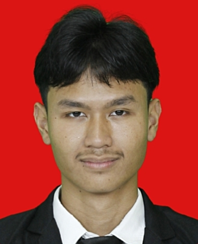

Nama: Putra Yuna Perkasa
Alamat: Depok, Jawa Barat
No. HP: (+62) 8810-1052-1469
| Tahun | Jenjang Pendidikan | Nama Sekolah |
|---|---|---|
| 2022-2025 | SMK | SMK Tunas Bangsa Depok |
| 2025-Sekarang | S1 Sistem Informasi | Telkom University Jakarta |
Saya merupakan seorang mahasiswa S1 Sistem informasi yang sedang menjalani perkuliahan pada semester ketiga.